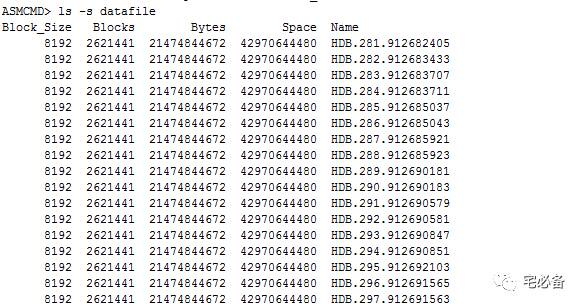

asmcmd管理ASM文件
原创 2017-11-16 Oracle 宅必备
这个专题讲ASM相关的内容
这节讲ASM 的asmcmd命令
asmcmd命令是我们管理ASM的一个命令行工具
我们可以使用help dsget的形式查看帮助
通过grid用户进入

ASM文件相关命令
1.1 cd
该命令用户改变当前所在的目录
1.2 cp
该命令用于在ASM 磁盘组，操作系统，远程系统之间拷贝文件
注意：不能再2个远程系统间操作
ASMCMD [+] > cp +data/orcl/datafile/EXAMPLE.265.691577295 /mybackups/example.bak
ASMCMD [+] > cp /mybackups/examples.bak +data/orcl/datafile/myexamples.bak
ASMCMD [+] > cp +data/orcl/datafile/EXAMPLE.265.691577295 sys@myserver.+ASM:/scratch/backup/myexamples.bak
Enter Password:
1.3 du
该命令计算目录已使用的大小，若不指定目录则计算当前目录
注意：不能计算文件的大小
Used_MB不包括镜像使用的大小
Mirror_used_MB包括镜像使用的大小
1.4 find
该命令查找指定目录的文件
1.5 ls
该命令列出当前目录的文件信息
他有不同的参数
-l 代表显示详细信息 -s代表显示空间使用 -t代表按时间排序而不是按名称 –permission表示显示权限信息

1.6 lsof
该命令列出当前客户端正在打开的文件

1.7 mkalias
该命令为系统生产的文件名设置别名
ASMCMD [+data/orcl/datafile] > mkalias SYSAUX.257.721811945 sysaux.f
ASMCMD [+data/orcl/datafile] > ls --absolutepath
none => EXAMPLE.265.721812093
+DATA/ORCL/DATAFILE/sysaux.f => SYSAUX.257.721811945
none => SYSTEM.256.721811945
none => UNDOTBS1.258.721811945
none => USERS.259.721811947
sysaux.f
1.8 mkdir
该命令在当前目录创建文件夹，可以同时创建多个
注意：无法在根目录创建文件夹
ASMCMD [+data] > mkdir subdir1 subdir2
ASMCMD [+data] > ls
ASM/
ORCL/
subdir1/
subdir2/
1.9 pwd
该命令获取当前目录的绝对路径
ASMCMD> pwd
+hdb_data/hdb/controlfile
1.10 rm
该命令删除指定的文件或目录

ASMCMD [+data/orcl/datafile] > rm myexamples.bak
ASMCMD [+data] > rm -r subdir2
You may delete multiple files and/or directories.
Are you sure? (y/n) y
1.11 rmalias
该命令删除文件的别名,并不会删除该文件
ASMCMD [+data/orcl/datafile] > rmalias sysaux.f
具体请参考下面链接或点击阅读原文:
https://docs.oracle.com/cd/E11882_01/server.112/e18951/asm_util003.htm#OSTMG01643